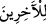

“Onları, sonradan gelenlerin geçmişi” kendilerinden sonra ki kâfirlere bir öğüt
vesilesi “ve bir ibret örneği kıldık.”
“
/selefen” kelimesi “takaddüm: öne geçmek” mânâsındaki bir kökten türemiştir.
Mübâlağa ifâde etmek üzere bu kelimeyle şahıslar vasıflanmış ve “geçmiş öncüler”
anlamı kasdedilmiştir. “Tekaddüm” kelimesi “lâm” ile müteaddî olmayınca âlimler
bunu mecâzen “kıdve: önder” diye tefsir etmişlerdir. Çünkü önce gelenler, genel olarak
kendilerinden sonrakilere öncü ve önder olurlar. Mânâ şudur: Onları kendilerinden
sonra gelen kâfirlere önder yaptık. Bu kâfirler, onlara gelen azâbın kendilerine de
gelmesini gerekli kılacak hususlarda, onların izlerini tâkip etmektedirler.
Aynü’l-meâni’ de, “biz onları cehennem ateşinde öncü yaptık” mânâsı verilmiştir.
“
/li’l-âhirîn” kelimesindeki “lâm” harf-i ceri münâzaa yoluyla hem “selefen”
hem de “meselen” kelimelerine taalluk eder. Yani “onları kendilerinden sonra gelen
kâfirlere bir öğüt vesilesi yaptık.” Ancak öğüt almak, öğüdün levâzımından değildir.
Yahut “onları darb-ı mesel konusunda enteresan bir kıssa yaptık” demektir. Nitekim,
“sizin benzeriniz Firavun kavminin benzeridir” denilir.
Kâşifî şöyle demiştir: Sonradan gelenler için onları bir ibret ve öğüt örneği kıldık ki
ona bakıp itibar sâhibi olsunlar. Aslında şu garip hikâye onların hallerini değiştirmeleri
için yeterli bir örnektir. Şöyle ki; Firavun suya nazlanmakta, itimad etmekteydi. Oysa
suya girdiğinde su onu hemen boğuverdi, nazlanıp itimad ettiği şey onun feryadına
yetişmedi. Aksine şâirin dediği gibi oldu:
Bu dünyada çok sevip şiddetle istediğin serdarlık,
Senin başının gitmesine, ölüm ve helâkine sebep olur.
Âyette şuna işâret edilmektedir: Allah için öfkelenmek fazîlet ve güzelliktir. Çirkin bir
durum değildir.
Semmâk b. Fadl şöyle demiştir: Urve b. Muhammed’in yanında bulunuyorduk. Onun
yanında da Vehb b. Münebbih vardı. Bir topluluk gelip zekât memurlarından şikâyet
ederek bunu belgelediler. Vehb b. Münebbih, Urve’nin elinde bulunan değneği alıp zekât
memurunun başına vurdu. Adamı yaralayıp kanlar içinde bıraktı. Urve çok sabırlı ve
yumuşak huylu bir insandı. Bu durumu yadırgadı ve: “Ebû Abdullah bizim
öfkelenmemizi ayıplıyor. Halbuki kendisi de öfkeleniyor” dedi. Vehb şöyle karşılık
verdi: “Niye öfkelenmeyeyim ki, bütün güzel ahlâkı, sabır ve yumuşak huyları yaratan
Allah bile öfkelenmektedir.” Sonra da Allah Teâlâ’nın “Onlar bizi kızdırınca biz de
onlardan intikam aldık, hepsini boğduk” âyetini hatırlattı.
Âyette ayrıca şöyle bir husûsa işâret edilmektedir: Allah dostlarını kızdırmak, Allah’ı
kızdırmaktır. Hatta burada “bizi kızdırdılar” ifâdesine “bizim elçilerimizi ve
dostlarımızı kızdırdılar” şeklinde mânâ vermişlerdir. Esâsen Allah tâzim kasdıyla,
elçilerine ve dostlarına kızmayı kendi zâtına nispet etmiştir.
Ebû Abdullah er-Râdî şöyle demiştir: Allah’ın kızması, bizim kızmamız gibi